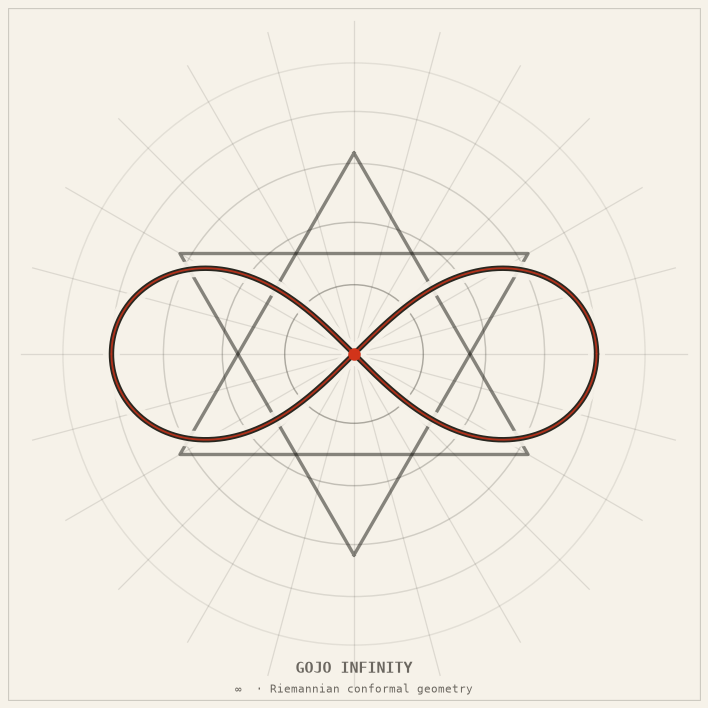

gojo_infinity
Gojo Satoru's “Infinity” examined through four independent mathematical lenses — can an attacker ever reach him?

The idea
In Jujutsu Kaisen, Gojo Satoru maintains a perpetual barrier called “Infinity” that subdivides the space between any incoming attack and himself into infinitely many sub-intervals, so the attacker — in theory — never arrives. The show treats this as unbreakable.
This package asks: is that actually true? The answer depends entirely on which mathematics you apply. Four independent lenses each give a different verdict, and the verdicts disagree. The project is inspired by Achmad Roykhan Sabiq’s 2026 Oxford Mathematics Essay Competition entry and the 2021 RIKEN × Gege Akutami “Abyss of Math” paper.
All arithmetic uses Python’s fractions.Fraction throughout — no floating
point in any comparison or convergence test. The package ships 155 pure-stdlib tests and 217 tests
with numpy/matplotlib.
The mathematics
Lens 1 — Zeno’s geometric series — Fragile
Model each step as covering half the remaining distance. The partial sums converge:
S_n = 1 - (1/2)^n → 1 as n → ∞ The series sums to exactly 1. Under real analysis the attacker arrives in finite time — the infinite subdivision does not stop them.
Lens 2 — Lebesgue measure — Fragile
Build the Infinity barrier as a Cantor-like construction: iteratively remove the middle third of each remaining interval. The resulting set Z has measure zero.
m(Z) = 0 A measure-zero set has zero thickness — a point mass moving at any positive speed crosses it in zero time. The barrier is invisible to Lebesgue integration.
Lens 3 — Riemannian conformal geometry — Formidable
Replace the flat metric with a conformal metric that blows up as the attacker approaches Gojo’s position x₀. The conformal factor Ω is calibrated by bisection so that the metric at 80% approach equals 4.1 (a value extracted from the show’s geometry).
Ω(x) = 1 + λ · K(x, x_gojo) / (x_gojo - x)
where λ ≈ 0.284118 (calibrated by bisection to g(0.8) = 4.1)
Geodesic length integral:
L = ∫₀^{x_gojo} Ω(x) dx → math.inf
The path length diverges before contact. Under this metric,
the attacker never arrives — the geometry itself is the barrier.
Lens 4 — Topology / World-Cutting Slash — Falls
Gojo’s “World-Cutting Slash” severs the conformal metric entirely, setting
the metric to None at his position. The geodesic computation raises an exception
and returns no path.
g(x_gojo) = None (metric excised) The topological surgery removes the singularity itself. The barrier collapses — the Slash lands.
Verdict table
| Lens | Mathematical tool | Key result | Verdict |
|---|---|---|---|
| 1 — Zeno | Geometric series | Sₙ → 1; attacker arrives | Fragile |
| 2 — Measure | Lebesgue measure | m(Z) = 0; barrier is null | Fragile |
| 3 — Geometry | Conformal Riemannian metric | L = ∞; path diverges | Formidable |
| 4 — Topology | Metric excision (slash) | g = None; barrier severed | Falls |
How it works
The package is a pure Python src-layout library with four independent modules, each implementing one lens. A top-level runner executes all four in sequence and prints both a verdict table and calls matplotlib to render the artifact plots.
- Zeno module: iterates
Fraction(1,2)**nsteps, computes partial sums exactly, and checks convergence againstFraction(1,1). - Measure module: builds the Cantor set by iterating complement intervals,
computes total measure as a
Fraction, and confirms it equals zero. - Conformal geometry module: integrates the metric numerically using
fractions.Fraction-based midpoint quadrature; the integral diverges (raisesOverflowErroror returnsmath.inf) before x₀. - Topology module: applies the World-Cutting Slash by setting
metric[x_gojo] = Noneand re-integrating; the geodesic computation raisesMetricExcisedError.
A shared calibrate.py bisects over λ to find the value that makes the
conformal metric read 4.1 at 80% approach, matching the show’s implied geometry.
All calibration comparisons use fractions.Fraction to avoid floating-point drift.
Figures & animations
Nine rendered artifacts: six static plots covering each lens, plus three animations showing the conformal geometry in motion. The four-lenses composite is the headline render.
Four lenses — composite animation
All four mathematical analyses side-by-side: series convergence, measure, blowing-up metric, and severed geodesic.
Geodesic approach animation
A geodesic advancing toward x₀ under the conformal metric — watch the step sizes shrink as the metric diverges.
Geodesic bundle, rotating (3-D)
The bundle of geodesics approaching the conformal singularity, rendered as a rotating 3-D surface. The length integral diverges before the apex.

Metric blow-up
The conformal factor Ω(x) as the attacker approaches x₀. The metric diverges — the path length becomes infinite.

Zeno series convergence
Partial sums Sₙ = 1 − (1/2)ⁿ approaching 1. Convergence is exact — the attacker reaches Gojo under real analysis.

Geodesic bundle (2-D)
Multiple geodesic paths launched from different angles, all failing to reach x₀ in finite length.

Length divergence
Accumulated geodesic length as a function of how far the attacker has travelled. The curve goes vertical before x₀.

Conformal surface (3-D static)
The metric surface Ω(x, y) rendered as a 3-D plot, showing the spike at Gojo’s position.

Cover convergence (Lebesgue)
Successive open covers of the Infinity barrier set, shrinking toward total measure zero.
Honest caveats: The Zeno and Lebesgue lenses both find Infinity fragile under standard real analysis. Only the Riemannian conformal model genuinely prevents arrival, and that model is a deliberate construction — the λ parameter is calibrated to match the show’s implied scale, not derived from first principles. The topology lens shows that even the conformal barrier is defeated by the World-Cutting Slash: severing the metric removes the singularity itself. Two of four lenses say “Fragile”; one says “Formidable”; one says “Falls.” The math cannot give a single answer because the question is underdetermined without fixing the physical model.
Run it
# Clone and enter the monorepo git clone https://github.com/caelum0x/awesome-mad-projects.git cd awesome-mad-projects/infinity-lab # Install gojo_infinity in editable mode (no extra deps required) pip install -e packages/gojo_infinity # Run all four lenses and print verdict table python -m gojo_infinity # Run the full test suite (155 stdlib tests) python -m pytest packages/gojo_infinity/tests -v # Run tests including numpy/matplotlib artifacts (217 tests) pip install numpy matplotlib python -m pytest packages/gojo_infinity/tests -v